전기산업기사 (2018-04-28 기출문제)
1과목: 전기자기학
1. 유전체에 가한 전계 E[V/m]와 분극의 세기 P[C/m2]와의 관계로 옳은 것은?
- P=ε0(εs+1)E
- P=ε0(εs-1)E
- P=εs(ε0+1)E
- P=εs(ε-1)E
(정답률: 80%)

2. 자유공간(진공)에서의 고유임피던스[Ω]는?
- 144
- 277
- 377
- 544
(정답률: 84%)
3. 크기가 1C인 두 개의 같은 점전하가 진공중에서 일정한 거리가 떨어져 9×109N의 힘으로 작용할 때 이들 사이의 거리는 몇 m인가?
- 1
- 2
- 4
- 10
(정답률: 76%)
4. 공극을 가진 환상 솔레노이드에서 총 권수 N, 철심의 비투자율 μr, 단면적 A, 길이 l이고 공극이 δ일 때, 공극부에 자속밀도 B를 얻기 위해서는 전류를 몇 A 흘려야 하는가?
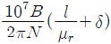
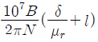
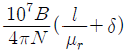
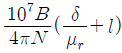
(정답률: 61%)
5. 자계의 세기가 H인 자계 중에 직각으로 속도 u로 발사된 전하 Q가 그리는 원의 반지름 r은?
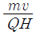
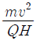
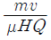
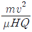
(정답률: 51%)
6. 면전하밀도 σ[C/m2], 판간 거리 d[m]인 무한 평행판 대전체 간의 전위차[V]는?(오류 신고가 접수된 문제입니다. 반드시 정답과 해설을 확인하시기 바랍니다.)
- σd
- σ/ε
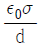
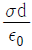
(정답률: 55%)
7. 진공 중의 도체계에서 임의의 도체를 일정 전위의 도체로 완전 포위하면 내외공간의 전계를 완전 차단시킬 수 있는 데 이것을 무엇이라 하는가?
- 홀효과
- 정전차폐
- 핀치효과
- 전자차폐
(정답률: 74%)
8. 평면 전자파의 전계 E와 자계 H와의 관계식은?
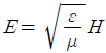
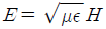
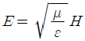
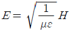
(정답률: 61%)
9. 그림과 같은 반지름 a[m]인 원형 코일에 I[A]의 전류가 흐르고 있다. 이 도체 중심축상 x[m]인 P점의 자위는 몇A 인가?
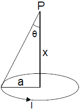
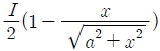
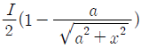
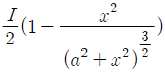
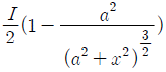
(정답률: 54%)
10. 자기인덕턴스가 각각 L1, L2인 두 코일을 서로 간섭이 없도록 병렬로 연결했을 때 그 합성 인덕턴스는?
- L1L2
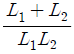
- L1+L2
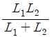
(정답률: 80%)
11. 도체의 성질에 대한 설명으로 틀린 것은?
- 도체 내부의 전계는 0이다.
- 전하는 도체 표면에만 존재한다.
- 도체의 표면 및 내부의 전위는 등전위이다.
- 도체 표면의 전하밀도는 표면의 곡률이 큰 부분일수록 작다.
(정답률: 65%)
12. 전류에 의한 자계의 방향을 결정하는 법칙은?
- 렌츠의 법칙
- 플레밍의 왼손 법칙
- 플레밍의 오른손 법칙
- 암페어의 오른나사 법칙
(정답률: 68%)
13. 금속도체의 전기저항은 일반적으로 온도와 어떤 관계인가?
- 전기저항은 온도의 변화에 무관하다.
- 전기저항은 온도의 변화에 대해 정특성을 갖는다.
- 전기저항은 온도의 변화에 대해 부특성을 갖는다.
- 금속도체의 종류에 따라 전기저항의 온도 특성은 일관성이 없다.
(정답률: 74%)
14. 반지름 a[m]인 두 개의 무한장 도선이 d[m]의 간격으로 평행하게 놓여 있을 때 a≪d인 경우, 단위 길이당 정전용량[F/m]은?
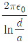
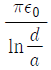
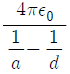
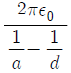
(정답률: 61%)
15. 두 개의 코일이 있다. 각각의 자기인덕턴스가 0.4H, 0.9H이고, 상호인덕턴스가 0.36H일 때 결합계수는?(오류 신고가 접수된 문제입니다. 반드시 정답과 해설을 확인하시기 바랍니다.)
- 0.5
- 0.6
- 0.7
- 0.8
(정답률: 74%)
16. 비유전율이 2.4인 유전체 내의 전계의 세기가 100[mV/m]이다. 유전체에 축적되는 단위체적당 정전에너지는 몇 [J/m3]인가?
- 1.06×10-13
- 1.77×10-13
- 2.32 ×10-13
- 2.32 ×10-11
(정답률: 65%)
17. 동심구 사이의 공극에 절연내력이 50[kV/mm]이며 비유전률이 3인 절연유를 넣으면, 공기인 경우의 몇 배의 전하를 축적할 수 있는가? (단, 공기의 절연내력은 3[kV/mm]라 한다.)
- 3
- 50/3
- 50
- 150
(정답률: 50%)
18. 자계의 벡터 포텐셜을 A할 때, A와 자계의 변화에 의해 생기는 전계 E 사이에 성립하는 관계식은?
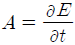
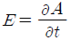
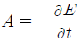
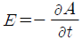
(정답률: 59%)
19. 그림과 같이 유전체 경계면에서 ε1＜ε2이었을 때 E1과 E2의 관계식 중 옳은 것은?
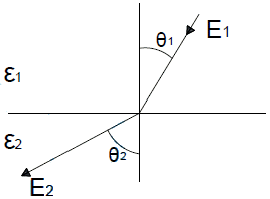
- E1＞E2
- E1＜E2
- E1=E2
- E1 cos θ1=E2 cos θ2
(정답률: 67%)
20. 균등하게 자화된 구(球)자성체가 자화될 때의 감자율은?
- 1/2
- 1/3
- 2/3
- 3/4
(정답률: 57%)
2과목: 전력공학
21. 보호계전기 동작이 가장 확실한 중성점 접지방식은?
- 비접지방식
- 저항접지방식
- 직접접지방식
- 소호리액터접지방식
(정답률: 74%)
22. 단상 2선식의 교류 배전선이 있다. 전선 한 줄의 저항은 0.15[Ω], 리액턴스는 0.25[Ω] 이다. 부하는 무유도성으로 100[V], 3[kW]일 때 급전점의 전압은 약 몇 V 인가?
- 100
- 110
- 120
- 130
(정답률: 55%)
23. 우리나라에서 현재 사용되고 있는 송전전압에 해당되는 것은?
- 150[kV]
- 220[kV]
- 345[kV]
- 700[kV]
(정답률: 79%)
24. 제5고조파를 제거하기 위하여 전력용 콘덴서 용량의 몇 %에 해당하는 직렬 리액터를 설치하는가?
- 2~3
- 5~6
- 7~8
- 9~10
(정답률: 76%)
25. 정정된 값 이상의 전류가 흘렀을 때 동작전류의 크기와 상관없이 항상 정해진 시간이 경과한 후에 동작하는 보호계전기는?
- 순시계전기
- 정한시계전기
- 반한시계전기
- 반한시성 정한시계전기
(정답률: 73%)
26. 변전소에서 사용되는 조상설비 중 지상용으로만 사용되는 조상설비는?
- 분로 리액터
- 동기 조상기
- 전력용 콘덴서
- 정지형 무효전력 보상장치
(정답률: 61%)
27. 저압 뱅킹(Banking) 배전방식이 적당한 곳은?
- 농촌
- 어촌
- 화학공장
- 부하 밀집지역
(정답률: 77%)
28. 유효낙차가 40% 저하되면 수차의 효율이 20% 저하된다고 할 경우 이때의 출력은 원래의 약 몇 %인가? (단, 안내 날개의 열림은 불변인 것으로 한다.)
- 37.2
- 48.0
- 52.7
- 63.7
(정답률: 35%)
29. 전력용 퓨즈는 주로 어떤 전류의 차단을 목적으로 사용하는가?
- 지락전류
- 단락전류
- 과도전류
- 과부하전류
(정답률: 72%)
30. 장거리 송전선로의 4단자 정수(A, B, C, D) 중 일반식을 잘못 표기한 것은?
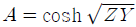
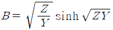
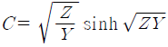
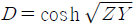
(정답률: 64%)
31. 3상 1회선 전선로에서 대지정전용량은 Cs이고 선간정전 용량을 Cm이라 할 때, 작용정전용량 Cn은?
- Cs+Cm
- Cs+2Cm
- Cs+3Cm
- 2Cs+Cm
(정답률: 75%)
32. 송전선로의 뇌해방지와 관계없는 것은?
- 댐퍼
- 피뢰기
- 매설지선
- 가공지선
(정답률: 79%)
33. 소호리액터 접지에 대한 설명으로 틀린 것은?
- 지락전류가 작다.
- 과도안정도가 높다.
- 전자유도장애가 경감된다.
- 선택지락계전기의 작동이 쉽다.
(정답률: 58%)
34. 3상 3선식 배전선로에 역률이 0.8(지상)인 3상 평형 부하 40kW를 연결했을 때 전압강하는 약 몇 V 인가? (단, 부하의 전압은 200V, 전선 1조의 저항은 0.02Ω이고, 리액턴스는 무시한다.)
- 2
- 3
- 4
- 5
(정답률: 39%)
35. 분기회로용으로 개폐기 및 자동차단기의 2가지 역할을 수행하는 것은?
- 기중차단기
- 진공차단기
- 전력용 퓨즈
- 배선용차단기
(정답률: 66%)
36. 교류 저압 배전방식에서 밸런서를 필요로하는 방식은?
- 단상 2선식
- 단상 3선식
- 3상 3선식
- 3상 4선식
(정답률: 67%)
37. 보일러에서 흡수열량이 가장 큰 것은?
- 수냉벽
- 과열기
- 절탄기
- 공기예열기
(정답률: 68%)
38. 3상 차단기의 정격차단용량을 나타낸 것은?
- √3 × 정격전압 × 정격전류
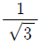
× 정격전압 × 정격전류- √3 × 정격전압 × 정격차단전류
 × 정격전압 × 정격차단전류
× 정격전압 × 정격차단전류
(정답률: 75%)
39. 변류기 개방 시 2차측을 단락하는 이유는?
- 측정 오차 방지
- 2차측 절연 보호
- 1차측 과전류 방지
- 2차측 과전류 보호
(정답률: 77%)
40. 단상 승압기 1대를 사용하여 승압할 경우 승압 전의 전압을 E1하면, 승압 후의 전압 E2는 어떻게 되는가? (단, 승압기의 변압비는
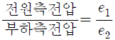
이다.)- E2=E1+e1E1
- E2=E1+e2
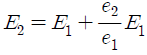
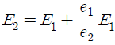
(정답률: 56%)
3과목: 전기기기
41. 3상 전원에서 2상 전원을 얻기 위한 변압기의 결선방법은?
- Δ
- T
- Y
- V
(정답률: 67%)
42. 직류 직권전동기의 운전상 위험속도를 방지하는 방법 중 가장 적합한 것은?
- 무부하 운전한다.
- 경부하 운전한다.
- 무여자 운전한다.
- 부하와 기어를 연결한다.
(정답률: 63%)
43. 권선형 유도전동기의 설명으로 틀린 것은?
- 회전자의 3개의 슬립링과 연결되어있다.
- 기동할 때에 회전자는 슬립링을 통하여 외부에 가감 저항기를 접속한다.
- 기동할 때에 회전자에 적당한 저항을 갖게 하여 필요한 기동토크를 갖게 한다.
- 전동기 속도가 상승함에 따라 외부저항을 점점 감소시키고 최후에는 슬립링을 개방한다.
(정답률: 61%)
44. 단상 반파정류회로에서 평균직류전압 200[V]를 얻는데 필요한 변압기 2차 전압은 약 몇 V 인가? (단, 부하는 순저항이고 정류기의 전압강하는 15V로 한다.)
- 400
- 478
- 512
- 642
(정답률: 53%)
45. 유도전동기의 슬립 s 의 범위는?
- 1＜s＜0
- 0＜s＜1
- -1＜s＜1
- -1＜s＜0
(정답률: 78%)
46. 정격 전압에서 전 부하로 운전하는 직류 직권전동기의 부하 전류가 50A이다. 부하 토크가 반으로 감소하면 부하전류는 약 몇 A인가? (단, 자기포화는 무시한다.)
- 25
- 35
- 45
- 50
(정답률: 43%)
47. 단상변압기를 병렬 운전하는 경우 부하전류의 분담에 관한 설명 중 옳은 것은?
- 누설리액턴스에 비례한다.
- 누설임피던스에 비례한다.
- 누설임피던스에 반비례한다.
- 누설리액턴스의 제곱에 반비례한다.
(정답률: 52%)
48. 3상 동기기에서 제동권선의 주 목적은?
- 출력 개선
- 효율 개선
- 역률 개선
- 난조 방지
(정답률: 75%)
49. 단상 유도전압조정기의 원리는 다음 중 어느 것을 응용한 것인가?
- 3권선 변압기
- v결선 변압기
- 단상 단권변압기
- 스콧트결선(T결선) 변압기
(정답률: 57%)
50. 유도전동기의 속도제어 방식으로 틀린 것은?
- 크레머 방식
- 일그너 방식
- 2차 저항제어 방식
- 1차 주파수제어 방식
(정답률: 54%)
51. 4극, 60Hz의 정류자 주파수 변환기가 회전자계 방향과 반대방향으로 1440rpm으로 회전할 때의 주파수는 몇 Hz인가?(오류 신고가 접수된 문제입니다. 반드시 정답과 해설을 확인하시기 바랍니다.)
- 8
- 10
- 12
- 15
(정답률: 59%)
52. 직류전동기의 속도제어법 중 광범위한 속도제어가 가능하며 운전효율이 좋은 방법은?
- 병렬 제어법
- 전압 제어법
- 계자 제어법
- 저항 제어법
(정답률: 74%)
53. 교류 단상 직권전동기의 구조를 설명한 것 중 옳은 것은?
- 역률 및 정류개선을 위해 약계자 강전기자형으로 한다.
- 전기자 반작용을 줄이기 위해 약계자 강전기자형으로 한다.
- 정류개선을 위해 강계자 약전기자형으로 한다.
- 역률개선을 위해 고정자와 회전자의 자로를 성층철심으로 한다.
(정답률: 42%)
54. 변압기의 단락시험과 관계없는 것은?
- 전압 변동률
- 임피던스 와트
- 임피던스 전압
- 여자 어드미턴스
(정답률: 63%)
55. 전기자 저항이 0.3Ω 인 분권발전기가 단자전압 550V에서 부하전류가 100A 일 때 발생하는 유도기전력[V]은? (단, 계자전류는 무시한다.)
- 260
- 420
- 580
- 750
(정답률: 67%)
56. 동기기의 단락전류를 제한하는 요소는?
- 단락비
- 정격 전류
- 동기 임피던스
- 자기 여자 작용
(정답률: 56%)
57. 병렬운전 중인 A, B 두 동기발전기 중 A발전기의 여자를 B발전기보다 증가시키면 A발전기는?
- 동기화 전류가 흐른다.
- 부하 전류가 증가한다.
- 90° 진상 전류가 흐른다.
- 90° 지상 전류가 흐른다.
(정답률: 48%)
58. 3상 동기발전기가 그림과 같이 1선 지락이 발생하였을 경우 단락전류 I0를 구하는 식은? (단, Ea는 무부하 유기기전력의 상전압, Z0, Z1, Z2는 영상, 정상, 역상 임피던스이다.)(문제 오류로 실제 시험장에서는 모두 정답 처리 되었습니다. 여기서는 가답안인 1번을 누르면 정답 처리 됩니다.)
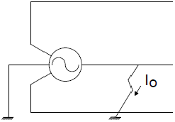
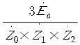
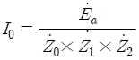
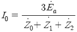
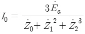
(정답률: 54%)
59. 유도전동기의 동기와트에 대한 설명으로 옳은 것은?
- 동기속도에서 1차 입력
- 동기속도에서 2차 입력
- 동기속도에서 2차 출력
- 동기속도에서 2차 동손
(정답률: 52%)
60. 임피던스 전압강하 4% 의 변압기가 운전 중 단락되었을 때 단락전류는 정격전류의 몇 배가 흐르는가?
- 15
- 20
- 25
- 30
(정답률: 70%)
4과목: 회로이론
61. 3상 불평형 전압에서 역상전압이 50V, 정상전압이 200V, 영상전압이 10V라고 할 때 전압의 불평형률(%)은?
- 1
- 5
- 25
- 50
(정답률: 66%)
62. 다음과 같은 회로의 a-b간 합성 인덕턴스는 몇 H 인가? (단, L1=4H, L2=4H, L3=2H, L4=2H 이다.)
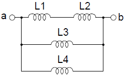
- 8/9
- 6
- 9
- 12
(정답률: 64%)
63. R-L-C 직렬회로에서 시정수의 값이 작을수록 과도 현상이 소멸되는 시간은 어떻게 되는가?
- 짧아진다.
- 관계없다.
- 길어진다.
- 일정하다.
(정답률: 62%)
64. 대칭 좌표법에서 사용되는 용어 중 3상에 공통된 성분을 표시하는 것은?
- 공통분
- 정상분
- 역상분
- 영상분
(정답률: 67%)
65. 어떤 회로의 단자전압이 V=100sin ωt+40sin2 ωt+30sin(3ωt+60°)[V]이고 전압강하의 방향으로 흐르는 전류가 I=10sin(ωt-60°)+2sin(3ωt+1⑤°)[A]일 때 회로에 공급되는 평균전력[W]은?
- 271.2
- 371.2
- 530.2
- 630.2
(정답률: 47%)
66. 3상 대칭분 전류를 I0, I1, I2라 하고 선전류를 Ia, Ib, Ic라고 할 때 Ib는 어떻게 되는가?
- I0+I1+I2
- I0+a2I1+aI2
- I0+aI1+a2I2
- 1/3(I0+I1+I2
(정답률: 60%)
67. 부하에 100∠ 30°[V]의 전압을 가하였을 때 10∠60°[A]의 전류가 흘렀다면 부하에서 소비되는 유효전력은 약 몇 W 인가?
- 400
- 500
- 682
- 866
(정답률: 62%)
68. 그림과 같은 회로에서 0.2Ω의 저항에 흐르는 전류는 몇A 인가?
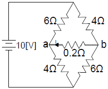
- 0.1
- 0.2
- 0.3
- 0.4
(정답률: 45%)
69.
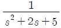
의 라플라스 역변환 값은?(오류 신고가 접수된 문제입니다. 반드시 정답과 해설을 확인하시기 바랍니다.)- e-2tcos2t
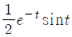
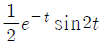
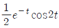
(정답률: 53%)
70. ℒ[u(t-a)]는 어느 것인가?
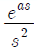
(정답률: 44%)
71. 2단자 임피던스함수 일 때 극점(pole)은?
- -2, -3
- -3, -4
- -2, -4
- -4, -5
(정답률: 66%)
72. 그림과 같은 회로에서 G2[℧] 양단의 전압강하 E2[V]는?
(정답률: 54%)
73. 그림과 같은 T형 회로의 영상 전달정수 θ는?
- 0
- 1
- -3
- -1
(정답률: 62%)
74. 저항 1/3Ω, 유도리액턴스 1/4Ω인 R-L 병렬회로의 합성 어드미턴스 [℧]는?
- 3+j4
- 3-j4
(정답률: 49%)
75. 대칭 3상 Y결선 부하에서 각상의 임피던스가 Z=16+j12[Ω]이고 부하전류가 5A 일 때, 이 부하의 선간전압[V]은?
- 100√2
- 100√3
- 200√2
- 200√3
(정답률: 71%)
76. 정현파의 파고율은?
- 1.111
- 1.414
- 1.732
- 2.356
(정답률: 72%)
77. 부동작 시간(dead time) 요소의 전달함수는?
- Ks
- K/s
- Ke-Ls
(정답률: 65%)
78. i(t)=I0est[A]로 주어지는 전류가 콘덴서 C[F]에 흐르는 경우의 임피던스[Ω]는?
- C
- sC
- C/s
(정답률: 63%)
79. 전기회로의 입력을 V1, 출력을 V2라고 할 때 전달함수는? (단, s=jω이다.)
(정답률: 47%)
80. 비정현파 전압 의 왜형률은 약 얼마인가?
- 0.36
- 0.58
- 0.87
- 1.41
(정답률: 45%)
5과목: 전기설비기술기준 및 판단 기준
81. 백열전등 또는 방전등에 전기를 공급하는 옥내전로의 대지전압은 몇 V 이하인가?
- 150
- 220
- 300
- 600
(정답률: 72%)
82. 특고압 가공전선로에 사용하는 철탑 중에서 전선로의 지지물 양쪽의 경간의 차가 큰 곳에 사용하는 철탑의 종류는?
- 각도형
- 인류형
- 보강형
- 내장형
(정답률: 73%)
83. 과전류 차단 목적으로 정격전류가 70A인 배선용 차단기를 저압전로에서 사용하고 있다. 정격전류의 2배 전류를 통한 경우 자동적으로 동작해야 하는 시간은?(관련 규정 개정전 문제로 여기서는 기존 정답인 3번을 누르면 정답 처리됩니다. 자세한 내용은 해설을 참고하세요.)
- 2분
- 4분
- 6분
- 8분
(정답률: 37%)
84. 저압 가공전선이 가공약전류 전선과 접근하여 시설될 때 저압 가공전선과 가공약전류 전선 사이의 이격거리는 몇 cm 이상이어야 하는가?
- 40
- 50
- 60
- 80
(정답률: 52%)
85. 345kV 가공 송전선로를 평야에 시설할 때, 전선의 지표상의 높이는 몇 m 이상으로 하여야 하는가?
- 6.12
- 7.36
- 8.28
- 9.48
(정답률: 66%)
86. 저압 옥내배선의 사용전선으로 틀린 것은?(오류 신고가 접수된 문제입니다. 반드시 정답과 해설을 확인하시기 바랍니다.)
- 단면적 2.5mm2 이상의 연동선
- 단면적 1mm2 이상의 미네럴인슈레이션 케이블
- 사용전압이 400V 미만의 전광표시장치 배선 시 단면적 1.5mm2 이상의 연동선
- 사용전압이 400V 미만의 출퇴표시등 배선 시 단면적 0.5mm2 이상의 다심케이블
(정답률: 52%)
87. 도로에 시설하는 가공 직류 전차 선로의 경간은 몇 m 이하로 하여야 하는가?
- 20
- 40
- 50
- 60
(정답률: 36%)
88. 사용전압이 100kV 이상의 변압기를 설치하는 곳의 절연유 유출방지 설비의 용량은 변압기 탱크 내장유량의 몇 % 이상으로 하여야 하는가?(관련 규정 개정전 문제로 여기서는 기존 정답인 2번을 누르면 정답 처리됩니다. 자세한 내용은 해설을 참고하세요.)
- 25
- 50
- 75
- 100
(정답률: 51%)
89. 고압 가공전선로의 경간은 B종 철근 콘크리트주로 시설하는 경우 몇 m 이하로 하여야 하는가?
- 100
- 150
- 200
- 250
(정답률: 47%)
90. 가요전선관 공사에 의한 저압 옥내배선 시설에 대한 설명으로 틀린 것은?(관련 규정 개정전 문제로 여기서는 기존 정답인 4번을 누르면 정답 처리됩니다. 자세한 내용은 해설을 참고하세요.)
- 옥외용 비닐전선을 제외한 절연전선을 사용한다.
- 제1종 금속제 가요전선관의 두께는 0.8mm 이상으로 한다.
- 중량물의 압력 또는 기계적 충격을 받을 우려가 없도록 시설한다.
- 옥내배선의 사용전압이 400V 이상인 경우에 제3종 접지공사를 한다.
(정답률: 60%)
91. 가공전선로의 지지물 중 지선을 사용하여 그 강도를 분담 시켜서는 안 되는 것은?
- 철탑
- 목주
- 철주
- 철근콘크리트주
(정답률: 68%)
92. 최대 사용전압이 23kV인 권선으로서 중성선 다중접지방식의 전로에 접속되는 변압기권선의 절연내력시험 시험전압은 약 몇 kV 인가?
- 21.16
- 25.3
- 28.75
- 34.5
(정답률: 52%)
93. 목주, A종 철주 및 A종 철근 콘크리트주를 사용할 수 없는 보안공사는?
- 고압 보안공사
- 제1종 특고압 보안공사
- 제2종 특고압 보안공사
- 제3종 특고압 보안공사
(정답률: 63%)
94. 정격전류 20A인 배선용 차단기로 보호되는 저압 옥내전로에 접속할 수 있는 콘센트 정격전류는 몇 A 이하인가?
- 15
- 20
- 22
- 25
(정답률: 51%)
95. 사용전압이 380V인 옥내배선을 애자사용공사로 시설할 때 전선과 조영재 사이의 이격거리는 몇 cm 이상이어야 하는가?
- 2
- 2.5
- 4.5
- 6
(정답률: 52%)
96. 과전류차단기로 저압전로에 사용하는 퓨즈는 수평으로 붙인 경우에 정격전류의 몇 배의 전류에 견뎌야 하는가?
- 1.1
- 1.25
- 1.6
- 2.0
(정답률: 39%)
97. 특고압 가공전선과 발전소 금속제의 울타리 등이 교차하는 경우에 울타리에는 교차점에서 좌, 우로 45m 이내에 시설하는 접지공사의 종류는 무엇인가?(관련 규정 개정전 문제로 여기서는 기존 정답인 1번을 누르면 정답 처리됩니다. 자세한 내용은 해설을 참고하세요.)
- 제1종 접지공사
- 제2종 접지공사
- 제3종 접지공사
- 특별 제3종 접지공사
(정답률: 52%)
98. 전력보안통신 설비인 무선통신용 안테나를 지지하는 목주는 풍압하중에 대한 안전율이 얼마 이상이어야 하는가?
- 1.0
- 1.2
- 1.5
- 2.0
(정답률: 66%)
99. 특고압 가공전선로의 경간은 지지물이 철탑인 경우 몇 m 이하이어야 하는가? (단, 단주가 아닌 경우이다.)
- 400
- 500
- 600
- 700
(정답률: 65%)
100. “조상설비”에 대한 용어의 정의로 옳은 것은?
- 전압을 조정하는 설비를 말한다.
- 전류를 조정하는 설비를 말한다.
- 유효전력을 조정하는 전기기계기구를 말한다.
- 무효전력을 조정하는 전기기계기구를 말한다.
(정답률: 63%)
이유: 유전체 내부에서 전기장이 존재하면, 분자 내부의 전자들은 전기장에 의해 분극화(polarization)되어 전기적인 양극성을 띠게 된다. 이 때, 분극의 세기 P는 전계 E와 유전율(εs) 및 유전율 상수(ε0)에 의해 결정된다. 유전체 내부에서 전기장이 일정하다면, 분극의 세기 P는 전계 E와 비례한다. 따라서, P=ε0(εs-1)E의 관계식이 성립한다.